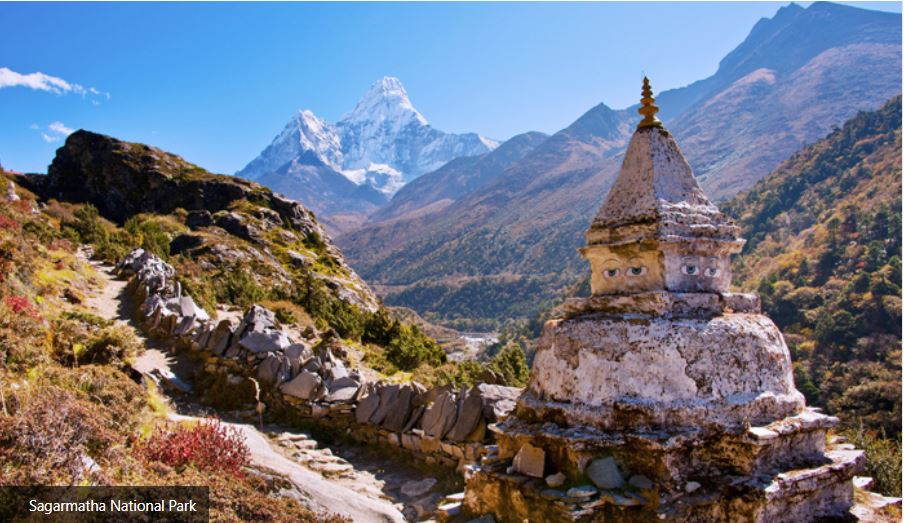

HISTORICAL
PEACEFUL E-Library for the
NEPAL Nepali Students
E-LIBRARY
HISTORICAL
PEACEFUL
E-Library for the
NEPAL Nepali Students
E-LIBRARY
⚲
Home
Historical Thinking
Browse History
About

 The first Himalayan national park designated a World Heritage Site is Sagarmatha National Park. The park is a rare territory of mountains, glaciers, ice caps, and deep valleys inhabited by Sherpas. The national park has some of the world’s highest mountains, including Mount Everest, the tallest mountain globally. It is a storehouse of rare Himalayan herbs, flowers, and wildlife. Sagarmatha National Park has the most famous trekking destination globally, the Everest Base Camp. Highlights of Sagarmatha National ParkMount Everest, the tallest mountain in the world, lies inside the parkThe park also shelters several 8000, 7000, and 6000-meter peaksGokyo Lakes, the highest freshwater lake system in the world, lies inside the parkSnow leopards, Himalayan tahr, Blue Sheep, Red Panda, etc., are some of the wild inhabitantsTraditional Sherpa villages that have preserved ancient Buddhist culture and heritage are located inside the park.